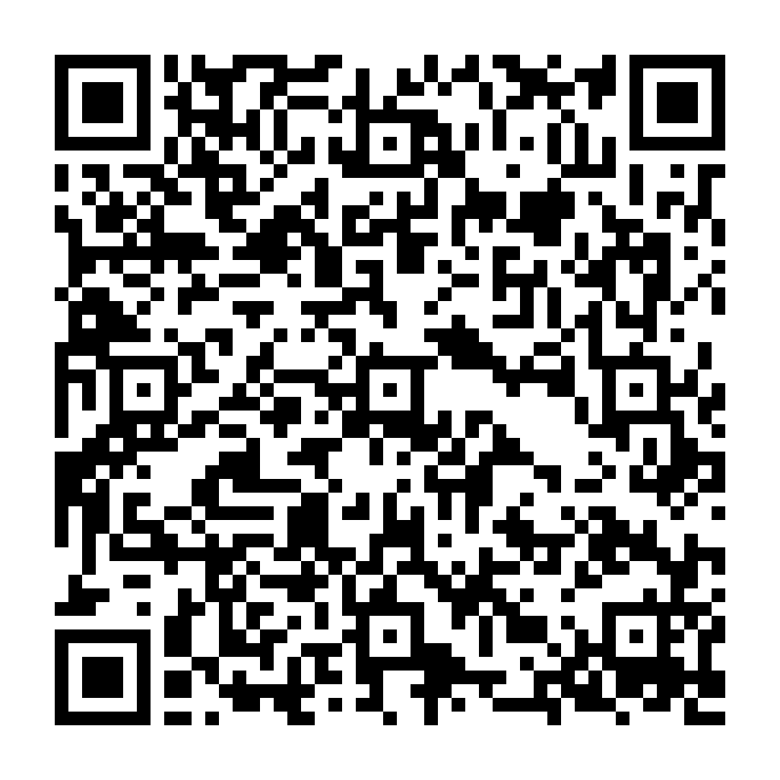

Pronto para conectar
Inicie a transmissão RTMP no drone.
Depois, abra o player para acompanhar o vídeo.
Acompanhe a câmera do seu drone, direto da sua rede.
Inicie a transmissão RTMP no drone.
Depois, abra o player para acompanhar o vídeo.
Primeira transmissão? Configure o endereço RTMP no controle ou aplicativo do drone. Mantenha o dispositivo e este servidor na mesma rede.
Ajuste como este navegador se conecta à transmissão.
Da câmera do drone para a sua tela. Tecnologia para compartilhar novas perspectivas.
Um servidor local para receber o vídeo do seu drone por RTMP e acompanhar a transmissão por WebRTC ou HLS.
Projeto independente, sem afiliação com fabricantes de drones. A compatibilidade depende do equipamento e do aplicativo utilizados.
Criador do Drone Streaming Server.
Conheça no GitHub ↗Se este projeto foi útil para você, considere contribuir com uma doação via Pix. Seu apoio ajuda a manter o desenvolvimento e trazer novas melhorias.
Contribuição voluntária. Obrigado por fazer parte desta ideia.
